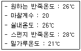
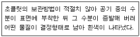

제빵기능사 (2011-10-09 기출문제)
1과목: 제조이론
1. 공립법으로 제조한 케이크의 최종제품이 열린 기공과 거친 조직감을 갖게 되는 원인은?(오류 신고가 접수된 문제입니다. 반드시 정답과 해설을 확인하시기 바랍니다.)
- 적정 온도보다 높은 온도에서 굽기
- 오버 믹싱된 낮은 비중의 반죽으로 제조
- 달걀 이외의 액체 재료 함량이 높은 배합
- 품질이 낮은(오래된) 달걀을 배합에 사용
(정답률: 62%)

2. 제빵 시 완성된 빵의 부피가 비정상적으로 크다면 그 원인으로 가장 적합한 것은?
- 소금을 많이 사용하였다.
- 알칼리성 물을 사용하였다.
- 오븐온도가 낮았다.
- 믹싱이 고율배합이다.
(정답률: 44%)
3. 옐로레이어 케이크의 적당한 굽기 온도는?
- 140℃
- 150℃
- 160℃
- 180℃
(정답률: 53%)
4. 공립법, 더운 방법으로 제조하는 스펀지케이크의 배합 방법 중 틀린 것은?
- 버터는 배합 전 중탕으로 녹인다.
- 밀가루, 베이킹파우더는 체질하여 준비한다.
- 달걀은 흰자와 노른자로 분리한다.
- 거품 올리기의 마지막은 중속으로 믹싱한다.
(정답률: 66%)
5. 무스크림을 만들 때 가장 많이 이용되는 머랭의 종류는?
- 이탈리안 머랭
- 스위스 머랭
- 온제 머랭
- 냉제 머랭
(정답률: 68%)
6. 향신료(spice& herb)에 대한 설명으로 틀린 것은?
- 향신료는 주로 전분질 식품의 맛을 내는데 사용된다.
- 향신료는 고대 이집트, 중동 등에서 방부제, 의약품의 목적으로 사용되던 것이 식품으로 이용된 것이다.
- 스파이스는 주로 열대지방에서 생산되는 향신료로 뿌리, 열매, 꽃, 나무껍질 등 다양한 부위가 이용된다.
- 허브는 주로 온대지방의 향신료로 식물의 잎이나 줄기가 주로 이용된다.
(정답률: 70%)
7. 다크 초콜릿을 템퍼링(Tempering)할 때 맨 처음 녹이는 공정의 온도 범위로 가장 적합한 것은?
- 10 ~ 20℃
- 20 ~ 30℃
- 30 ~ 40℃
- 40 ~ 50℃
(정답률: 49%)
8. 제조 공정 시 표면 건조를 하지 않는 제품은?
- 슈
- 마카롱
- 밤과자
- 핑거쿠키
(정답률: 66%)
9. 제과ㆍ제빵공장에서 생산관리 시 매일 점검할 사항이 아닌 것은?
- 제품 당 평균 단가
- 설비 가동률
- 원재료율
- 출근율
(정답률: 60%)
10. 블랜딩법으로 제조할 경우 해당하는 사항은?
- 달걀과 설탕을 넣고 거품 올리기 전 온도를 43℃로 중탕한다.
- 21℃ 정도의 품온을 갖는 유지를 사용하여 배합을 한다.
- 젖은상태(wet peak) 머랭을 사용하여 밀가루와 혼합한다.
- 반죽기의 반죽속도는 고속-중속-고속의 순서로 진행한다.
(정답률: 52%)
11. 다음 중 제품의 비중이 틀린 것은?
- 레이어 케이크 : 0.75 ~ 0.85
- 파운드 케이크 : 0.8 ~ 0.9
- 젤리롤 케이크 : 0.7 ~ 0.8
- 시퐁 케이크 : 0.45 ~ 0.5
(정답률: 56%)
12. 튀김용 기름의 온도로 가장 적합한 것은?
- 140 ~ 150℃
- 160 ~ 170℃
- 180 ~ 190℃
- 200 ~ 210℃
(정답률: 74%)
13. 일반적인 케이크 반죽의 팬닝 시 주의점이 아닌 것은?
- 종이 깔개를 사용한다.
- 철판에 넣은 반죽은 두께가 일정하게 되도록 펴준다.
- 팬기름을 많이 바른다.
- 팬닝 후 즉시 굽는다.
(정답률: 73%)
14. 반죽형 쿠키의 굽기 과정에서 퍼짐성이 나쁠 때 퍼짐성을 좋게 하기 위해서 사용할 수 있는 방법은?
- 입자가 굵은 설탕을 많이 사용한다.
- 반죽을 오래한다.
- 오븐의 온도를 높인다.
- 설탕의 양을 줄인다.
(정답률: 54%)
15. 여름철(실온 30℃)에 사과파이껍질을 제조할 때 적당한 물의 온도는?
- 4℃
- 19℃
- 28℃
- 35℃
(정답률: 46%)
16. 다음과 같은 조건상 스펀지반죽법(Sponge and dough method)에서 사용할 물의 온도는?

- 19℃
- 9℃
- -21℃
- 35℃
(정답률: 58%)
17. 다음 중 빵 포장재의 특성으로 적합하지 않은 성질은?
- 위생성
- 보호성
- 작업성
- 단열성
(정답률: 69%)
18. 빵의 부피가 너무 작은 경우 어떻게 조치하면 좋은가?
- 발효시간을 증가시킨다.
- 1차 발효를 감소시킨다.
- 분할무게를 감소시킨다.
- 팬 기름칠을 넉넉하게 증가시킨다.
(정답률: 78%)
19. 굽기 손실에 영향을 주는 요인으로 관계가 가장 적은 것은?
- 믹싱시간
- 배합율
- 제품의 크기와 모양
- 굽기온도
(정답률: 47%)
20. 산형식빵의 비용적으로 가장 적합한 것은?
- 1.5 ~ 1.8
- 1.7 ~ 2.6
- 3.2 ~ 3.5
- 4.0 ~ 4.5
(정답률: 57%)
2과목: 재료과학
21. 굽기의 실패 원인 중 빵의 부피가 작고 껍질색이 짙으며, 껍질이 부스러지고 옆면이 약해지기 쉬운 결과가 생기는 원인은?
- 높은 오븐열
- 불충분한 오븐열
- 너무 많은 증기
- 불충분한 열의 분배
(정답률: 65%)
22. 냉동과 해동에 대한 설명 중 틀린 것은?
- 전분은 -7 ~ 10℃ 범위에서 노화가 빠르게 진행된다.
- 노화대(stale zone)를 빠르게 통과하면 노화속도가 지연된다.
- 식품을 완만히 냉동하면 작은 얼음결정이 형성된다.
- 전분이 해동될 때는 동결 때보다 노화의 영향이 적다.
(정답률: 46%)
23. 식빵에서 설탕을 정량보다 많이 사용하였을 때 나타나는 현상은?
- 껍질이 엷고 부드러워진다.
- 발효가 느리고 팬의 흐름성이 많다.
- 껍질색이 연하며 둥근 모서리를 보인다.
- 향미가 적으며 속 색이 회색 또는 황갈색을 보인다.
(정답률: 49%)
24. 단위당 판매가격이 70원, 단위당 변동비가 50원, 고정비가 5000원이라고 하면 손익분기점은 얼마인가?
- 150원
- 200원
- 250원
- 300원
(정답률: 55%)
25. 밀가루 반죽의 물성측정 실험기기가 아닌 것은?
- 믹소그래프
- 아밀로그래프
- 패리노그래프
- 가스크로마토그래프
(정답률: 63%)
26. 다음 중 연속식 제빵법의 특징이 아닌 것은?
- 발효손실 감소
- 설비감소, 설비공간, 설비면적 감소
- 노동력 감소
- 일시적 기계구입 비용의 경감
(정답률: 58%)
27. 밀가루 50g에서 젖은 글루텐을 15g 얻었다. 이 밀가루의 조단백질 함량은?
- 6%
- 12%
- 18%
- 24%
(정답률: 48%)
28. 중간 발효에 대한 설명으로 틀린 것은?
- 글루텐 구조를 재정돈한다.
- 가스발생으로 반죽의 유연성을 회복한다.
- 오버 헤드 프루프(over head proot)라고 한다.
- 탄력성과 신장성에는 나쁜 영향을 미친다.
(정답률: 69%)
29. 다음 중 빵 반죽의 발효에 속하는 것은?
- 낙산발효
- 부패발효
- 알코올발효
- 초산발효
(정답률: 62%)
30. 다음 중 제2차 발효실의 온도와 습도로 적합한것은?
- 온도 27 ~ 29℃, 습도 90 ~ 100%
- 온도 38 ~ 40℃, 습도 90 ~ 100%
- 온도 38 ~ 40℃, 습도 80 ~ 90%
- 온도 27 ~ 29℃, 습도 80 ~ 90%
(정답률: 60%)
3과목: 영양학
31. 다음과 같은 조건에서 나타나는 현상과 그와 관련한 물질을 바르게 연결한 것은?

- 팻브룸(fat bloom) - 카카오매스
- 팻브룸(fat bloom) - 글리세린
- 슈가브룸(sugar bloom) - 카카오버터
- 슈가브룸(sugar bloom) - 설탕
(정답률: 60%)
32. 베이킹파우더의 산-반응물질(acid-reacting material)이 아닌 것은?
- 주석산과 주석산염
- 인산과 인산염
- 알루미늄 물질
- 중탄산과 중탄산염
(정답률: 41%)
33. 우유 중 제품의 껍질색을 개선시켜 주는 성분은?
- 유당
- 칼슘
- 유지방
- 광물질
(정답률: 67%)
34. 전분에 글루코아밀라아제(glucoamylase)가 작용하면 어떻게 변화하는가?
- 포도당으로 가수분해 된다.
- 맥아당으로 가수분해 된다.
- 과당으로 가수분해 된다.
- 덱스트린으로 가수분해 된다.
(정답률: 45%)
35. 물의 기능이 아닌 것은?
- 유화 작용을 한다.
- 반죽 농도를 조절한다.
- 소금 등의 재료를 분산시킨다.
- 효소의 활성을 제공한다.
(정답률: 56%)
36. 소다 1.5%를 사용하는 배합 비율에서 팽창제를 베이킹 파우더로 대체하고자 할 때 사용량은?
- 4%
- 4.5%
- 5%
- 5.5%
(정답률: 61%)
37. 잎을 건조시켜 만든 향신료는?
- 계피
- 넛메그
- 메이스
- 오레가노
(정답률: 63%)
38. 마가린의 산화방지제로 주로 많이 이용되는 것은?
- BHA
- PG
- EP
- EDGA
(정답률: 63%)
39. 밀 단백질 1% 증가에 대한 흡수율 증가는?
- 0 ~ 1%
- 1 ~ 2%
- 3 ~ 4%
- 5 ~ 6%
(정답률: 57%)
40. 껍질을 포함하여 60g인 달걀 1개의 가식부분은 몇 g 정도인가?
- 35g
- 42g
- 49g
- 54g
(정답률: 51%)
41. 아밀로오스는 요오드용액에 의해 무슨 색으로 변하는가?
- 적자색
- 청색
- 황색
- 갈색
(정답률: 59%)
42. 다음의 크림 중 단백질 함량이 가장 많은 것은?
- 식용크림
- 저지방포말크림
- 고지방포말크림
- 포말크림
(정답률: 49%)
43. 젤리화의 요소가 아닌 것은?
- 유기산류
- 염류
- 당분류
- 펙틴류
(정답률: 64%)
44. 버터 초콜릿(bitter chocclate)원액 속에 포함된 코코아 버터의 함량은?
- 3/8
- 4/8
- 5/8
- 7/8
(정답률: 51%)
45. 빵 발효에 관련되는 효소로서 포도당을 분해하는 효소는?
- 아밀라아제
- 말타아제
- 찌마아제
- 리파아제
(정답률: 49%)
46. 1일 2000kcal를 섭취하는 성인의 경우 탄수화물의 적절한 섭취량은?
- 1100 ~1400g
- 850 ~ 1⑤0g
- 500 ~ 125g
- 275 ~ 350g
(정답률: 41%)
47. 지질대사에 관계하는 비타민이 아닌 것은?
- pantothenic acid
- niacin
- vitamin B2
- folic acid
(정답률: 44%)
48. 글리세롤 1분자에 지방산, 인산, 클린이 결합한 지질은?
- 레시틴
- 에르고스테롤
- 콜레스테롤
- 세파
(정답률: 50%)
49. 나이아신(niacin)의 결핍증은?
- 야맹증
- 신장병
- 펠라그라
- 괴혈병
(정답률: 50%)
50. 티아민(Thiamin)의 생리작용과 관계가 없는 것은?
- 각기병
- 구순구각염
- 에너지 대사
- TPP로 전환
(정답률: 41%)
4과목: 식품위생학
51. 식품조리 및 취급과정 중 교차오염이 발생하는 경우와 거리가 먼 것은?
- 씻지 않은 손으로 샌드위치 만들기
- 생고기를 자른 가위로 냉면 면발 자르기
- 생선 다듬던 도마로 샐러드용 채소 썰기
- 반죽에 생고구마 조각을 얹어 쿠키 굽기
(정답률: 77%)
52. 식품첨가물의 안전성 시험과 가장 거리가 먼 것은?
- 아급성 독성 시험법
- 만성 독성 시험법
- 맹독성 시험법
- 급성 독성 시험법
(정답률: 55%)
53. 사람에게 영향을 미치는 결핵균의 병원체를 보유하고 있는 동물은?
- 쥐
- 소
- 말
- 돼지
(정답률: 56%)
54. 병원성 대장균 식중독의 가장 적합한 예방책은?
- 곡류의 수분을 10% 이하로 조정한다.
- 어류의 내장을 제거하고 충분히 세척한다.
- 어패류는 민물로 깨끗이 씻는다.
- 건강보균자나 환자의 분변 오염을 방지한다.
(정답률: 59%)
55. 장염 비브리오균에 감염되었을 때 나타나는 주요 증상은?
- 급성위장염 질환
- 피부농포
- 신경마비 증상
- 간경변 증상
(정답률: 70%)
56. 환경 중의 가스를 조절함으로써 채소와 과일의 변질을 억제하는 방법은?
- 변형공기포장
- 무균포장
- 상업적 살균
- 통조림
(정답률: 55%)
57. 식품첨가물의 종류와 그 용도의 연결이 틀린 것은?
- 발색제 - 인공적 착색으로 관능성 향상
- 산화방지제 - 유지식품의 변질 방지
- 표백제 - 색소물질 및 발색성 물질 분해
- 소포제 - 거품 소멸 및 억제
(정답률: 39%)
58. 쥐나 곤충류에 의해서 발생될 수 있는 식중독은?
- 살모넬라 식중독
- 클로스트리디움 볼툴리눔 식중독
- 포도상구균 식중독
- 장염 비브리오 식중독
(정답률: 56%)
59. 제과에 많이 사용되는 우유의 위생과 관련된 설명 중 옳은 것은?
- 우유는 자기살균작용이 있어 열처리된 우유는 위생상 크게 문제되지 않는다.
- 사료나 환경으로부터 우유를 통해 유해성 화학물질이 전달될 수 있다.
- 우유의 살균 방법은 병원균 중 가장 저항성이 큰 포도상구균을 기준으로 마련되었다.
- 저온살균을 하면 우유 1mL당 약 102마리의 세균이 살아 남는다.
(정답률: 45%)
60. 살모넬라(salmonella)균 식중독에 대한 설명으로 옳은 것은?
- 극소량의 균량(菌量) 섭취로 발병한다.
- 살모넬라균 독소의 섭취로 인해 발병한다.
- 10만 이상의 살모넬라균을 다량으로 섭취시 발병한다.
- 해수세균에 해당한다.
(정답률: 41%)